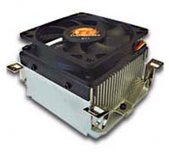

| water |
| home page |
|  | Figures 1 and 2 show the variation of cooling and heating capacities with applied current for the Terraview LC3-1000 (a liquid to liquid thermoelectric heat exchanger) which represents a typical thermoelectric system. . thermoelectric cooling - Solid State Cooling Systems - heating and cooling systems . Specializing in thermoelectric cooling thermoelectric cooler thermoelectric laser cooling heating and cooling system heating cooling systems cooling systems temperature controllers temperature control chillers liquid chillers heat exchangers heat exchanger liquid heat exchangers thermoelectric module thermoelectric devices thermoelectric modules thermoelectric device thermoelectric cooling module thermoelectric power thermoelectric cooler thermoelectric refrigeration thermoelectric temperature controller cold plates liquid cold plates cooling thermoelectrics DC power supplies Solid State Cooling Systems incorporates domestic and internationally manufactured thermoelectric modules into the heat exchangers we design. For detailed technical information on modules, we recommend you consult the web site of any thermoelectric module manufacturer. |
|
| . The two Innovatek kits, however, proved to be considerably better designed than the massive Swiftech models. Innovatek's kits also took the gold in terms of cooling capacity. Swiftech For real gung-ho overclockers, the only CPU cooling system even worth considering is a powerful water cooler. These overclocking fanatics usually remain far removed from the madding crowd of fans of the low-grade, conventional coolers on the market. |